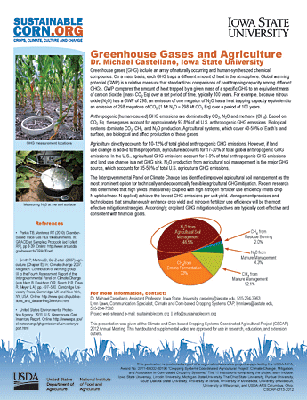

Speed Science Fact Sheets
These fact sheets were developed and presented as "Speed Science," at this project's 2012 annual conference in Wooster, Ohio.
Videos of the presentations will soon be available on this site.
These fact sheets and videos are approved for use in educational, research and extension settings.
Climate Change Beliefs, Concerns and Support for Adaptation and Mitigation among Corn Belt Farmers, by Dr. J. Gordon Arbuckle Jr.*, Iowa State University.
Climate and Climate Change, by Dr. Raymond W. Arritt, Iowa State University.
The Water Balance, by Dr. Laura Bowling, Purdue University.
Greenhouse Gases and Agriculture, by Dr. Michael Castellano, Iowa State University.
Effects of Rye Cover Crops on Anthropod Communities, by Mike W. Dunbar, Dr. Aaron J. Gassmann, and Dr. Matthew E. O'Neal, Iowa State University.
Landscape Scale Variability in Plant Performance: Preliminary Findings from Two Michigan CAP Sites, by Melissa (Mel) Erickson and Dr. Sasha Kravchenko, Michigan State University.
Drainage Water Management, by Dr. Jane Frankenberger, Purdue University.
Understanding the Dynamics of Soil Diversity and Variability in the Field, by Jenette Goodman and Dr. Phillip Owens, Purdue University.
Science Teacher Education, by Dr. Rachel Hintz, The Ohio State University.
Exploring Relationships among Farmer Perceptions on Climate Change, by Jon Hobbs, J. Gordon Arbuckle and Lois Wright Morton, Iowa State University.
Cover Crops, by Dr. Eileen J. Kladivko, Purdue University.
Soil Organic Carbon Cycle, by Dr. Sasha Kravchenko, Michigan State University.
Integrated Pest Management, Filling in the Cracks, by Dr. Daren Mueller and Nathan Bestor, Iowa State University.
Soil Nitrogen Cycle, by Dr. John E. Sawyer, Iowa State University.
Nitrogen Sensing and Impact on C, N, and H20, by Dr. Peter Scharf, University of Missouri.
Qualitative Farmer Assessment of Adaptive Management, by Dr. John Tyndall, Dr. J. Gordon Arbuckle Jr. and Gabrielle Roesch, Iowa State University.
No-Tillage Impacts on Soil Carbon, Nitrogen and Water, by Dr. Warren A. Dick, The Ohio State University.
* The farmer survey noted in this fact sheet was a collaborative effort between several social scientists from various universities: John Tyndall, Tricia Knoot and Lois Wright Morton, Iowa State University; Linda Prokopy, Purdue University; and Tonya Haigh and Cody Knutson, University of Nebraska.